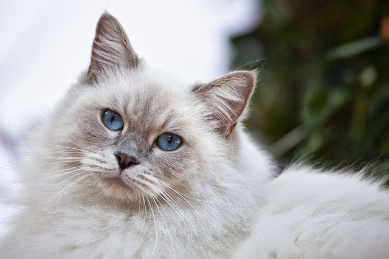
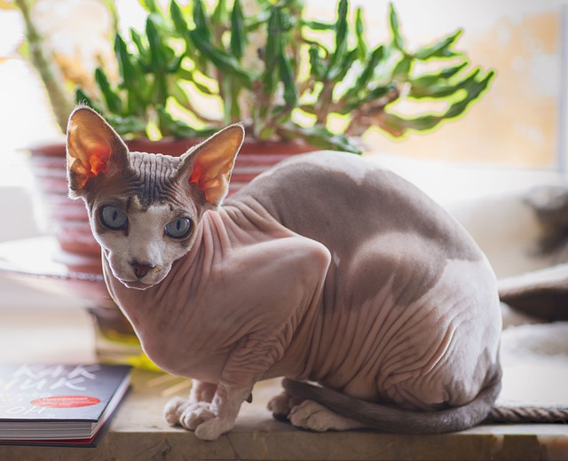

This is a hairy cat. They do indeed shed some fur here and
there.
While they make look friendly, don't be easily fooled for
they possess a very particular set of skills. Skills they have acquired over
a very long career. Skills, that make them a nightmare for people like you...
Naked Cats

This is a fur-less cat. Why anyone would possess such a thing
is
beyond me.
Standard Issue
This is your standard issued cat. This is the type you'll
most likely encounter upon a crazy cat lady's collection, internet memes, or just generally
walking
around in a suburban neighborhood.